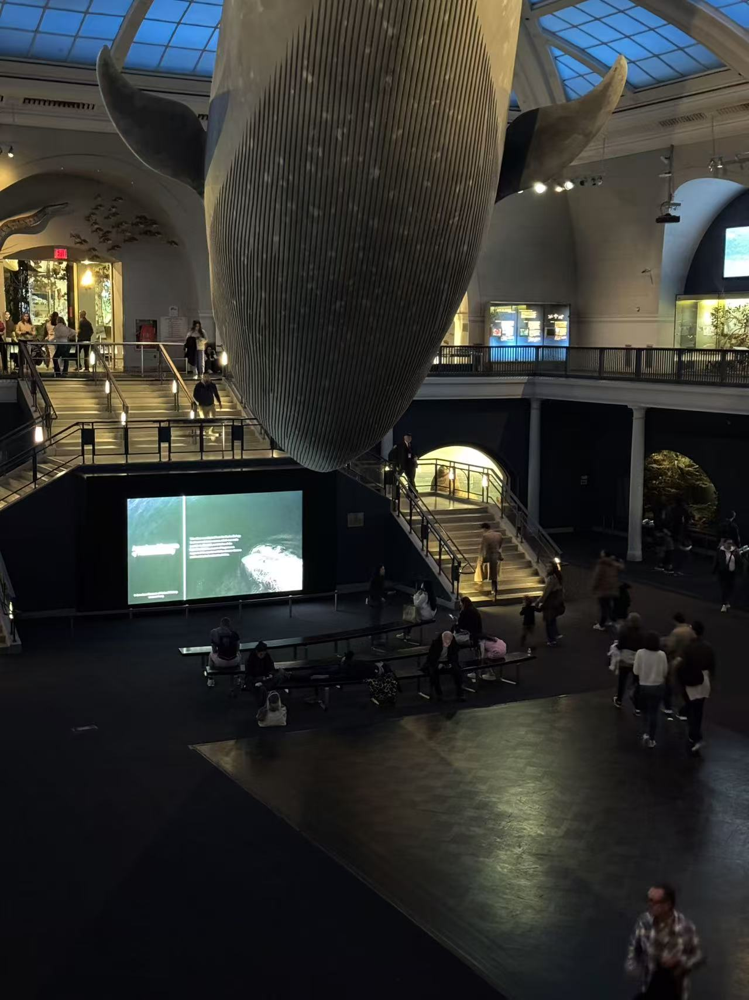

Entry 8: Natural History Museum
The museum hums with a slow, steady rhythm. Every sound seems to arrive a second late—the click of shoes on the stone floor, the hush of air from the vents, the distant murmur of a school group climbing the stairs. In the Hall of Ocean Life, the ceiling curves high above, and the great blue whale floats in its own silence. Voices drift upward and fade before they reach it.
The benches below echo faintly when someone stands up. Phones open, shutters click, and for a moment the hall fills with the soft chorus of notifications and camera sounds. The lights shift between cool and warm, catching on the whale’s surface like waves that forgot to move.
Around the corner, a child taps the glass of an aquarium case and whispers, “It’s real.” A guard’s footsteps pass behind, heavy and even. Every small noise stays longer here; the rooms hold onto them, stretching time the way they preserve everything else.
The building feels alive in its own way—a breath through vents, a low vibration from somewhere deep inside the walls. Nothing here is loud, yet nothing is still. The echoes keep moving, finding new corners to rest in.